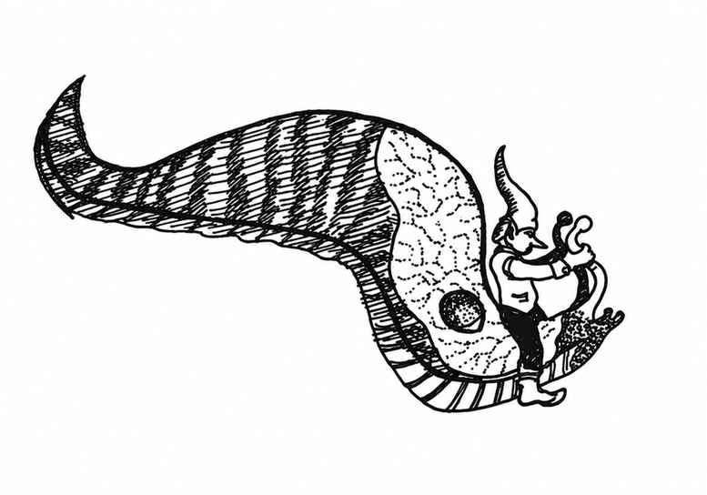

巨型水蛭 · Leech, Giant
 |
|
巨型水蛭只出现在沼泽与湿地的污浊水域中。任何温血生物只要进入它们 3 寸的移动范围，就可能遭受袭击。它们潜伏在泥浆与黏液中，等待猎物经过后扑上去。巨型水蛭的生命骰为 1–4，同一群体中通常会有不同体型的个体。
首次攻击时，吸盘状口器便会附着在受害者身上；从下一近战轮起，每轮吸血，伤害相当于其每颗生命骰造成 1 点。除非受害者看见水蛭从水中爬出，否则只有 1% 概率察觉袭击；水蛭的唾液具有麻痹作用，受害者通常要到虚弱（失去 50% 生命值）时才会意识到异常。夜间，水蛭会离水爬出，攻击 3 寸范围内的猎物。可通过攻击杀死它们，也可向其身体撒大量盐。
其咬伤有 50% 概率导致疾病；若未治愈，患者会在 2–5 周内死亡。